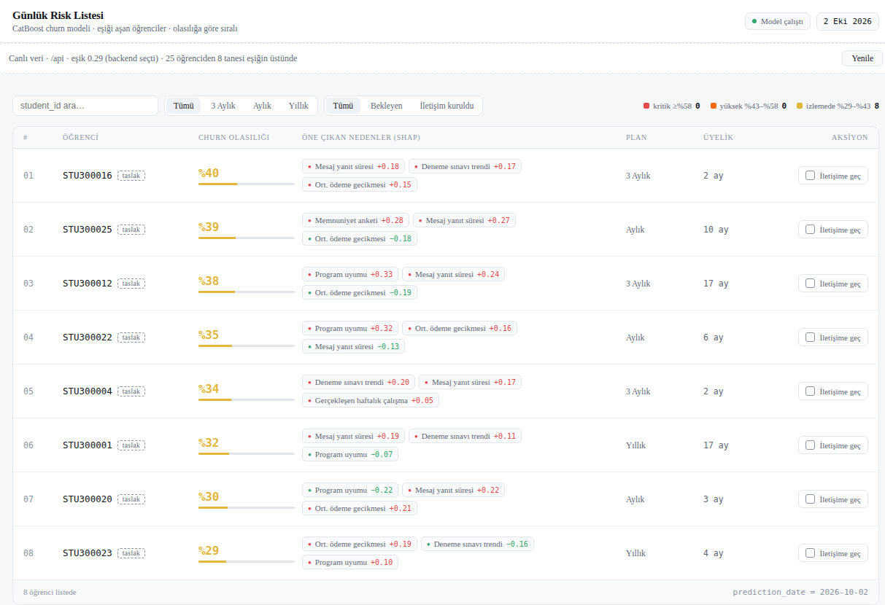
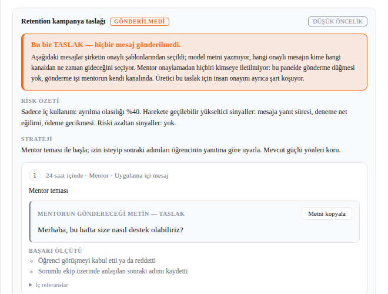

01 · Traditional AI
Borrowed
intelligence.
- Third-party models
- Shared learning surface
- Usage-based dependency
- Generic capability
↗

Start a conversation ↗Production AI on your data, owned by you
We architect private intelligence that belongs entirely to your enterprise: models, knowledge, workflows, and the advantage they create.
YOUR KNOWLEDGE
YOUR MODEL
YOUR INTELLIGENCE
A new category
EOAI is Enterprise-Owned Artificial Intelligence: dedicated systems made for the way your organization actually operates.
Not an API dependency. Not a rented capability. Your intellectual infrastructure, built to compound.
Why ownership matters ↘01 · Traditional AI
02 · Enterprise-Owned AI
The ownership principle
How we build
From the first signal to self-improving operations, every layer is designed around your business, and left entirely in your hands.
We find the decisions, patterns, and expertise worth turning into an owned advantage.
We design the model, data, security, and workflow system around the reality of your enterprise.
Private models and agents are shaped on your knowledge, not someone else’s public cloud.
We put intelligence into the work, with governance built in from day one.
Your system learns from your operation, making your advantage harder to replicate over time.
What we make
Our focus today is education: catching student dropout before it happens. The same core engine extends to any decision your own data can inform.
Who is about to leave, why, and what to do this week. Every morning, for every active student.
↗Production systems trained on your own data, running in your environment, and handed over to you.
↗Don’t see a category for your opportunity?
Tell us whatWe can also help with: private language models · agents & automation · knowledge systems (RAG) · AI infrastructure & security.
Services / Solutions
Not concepts on a slide: pipelines we built end to end, explainable by design and deployable on infrastructure you control. None is running at a client yet. The next step is a backtest on your own data.
SOLUTION 01 · EDUCATION · V1 · PILOT STAGE
A student doesn’t leave overnight. Replies slow down, mock-exam scores slip, payments run late, attendance drops: signals your systems already record but nobody reads together. Every morning, EO-Churn answers three questions for each active student: who is about to leave, why, and what your team should do this week.


A CSV or LMS export from the system you already use. Your column headers are mapped to our schema once. No new data collection.
Not another institution’s data. Unusable rows are set aside and reported back to you.
Every active student re-scored. A ranked list with reasons, sized to your team’s capacity. Delivered on the dashboard, by e-mail, Telegram, or webhook.
The mentor reaches out and logs the outcome. That outcome feeds the next training run, so the model adapts to your institution.
Daily risk list,
no login needed
Reasons per student,
by column name (SHAP)
Delivery channels:
e-mail, Telegram, webhook
To a free backtest report
on your own data
More solutions are in active development.
Tell us what you’dHow EO-Churn works
THE REAL ARCHITECTURE
EO-Churn isn’t rewritten for every client. The core engine stays the same; only a mapping file that translates your column headers into our schema changes. The model is trained on your own student history, runs in your environment, and its weights are handed over to you. It keeps working even if our relationship ends.
Request a free backtest ↗ Read the EOAI paper ↗Questions, answered
Enterprise-Owned Artificial Intelligence is a dedicated intelligence system (models, knowledge, workflows, and infrastructure) controlled by your organization, for your organization.
Public models can be powerful tools. But they are not your long-term intellectual property, operating system, or differentiated advantage. EOAI turns intelligence into an owned asset.
Focused systems can launch in weeks. Larger enterprise platforms evolve in deliberate phases, balancing impact, readiness, and governance.
Organizations ready to make intelligence part of their core operating model, without outsourcing their future to a third-party API.
The next enterprise advantage